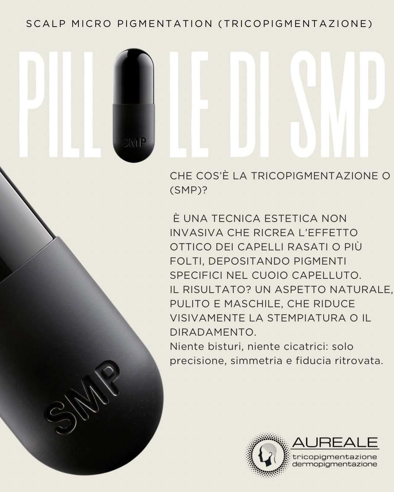
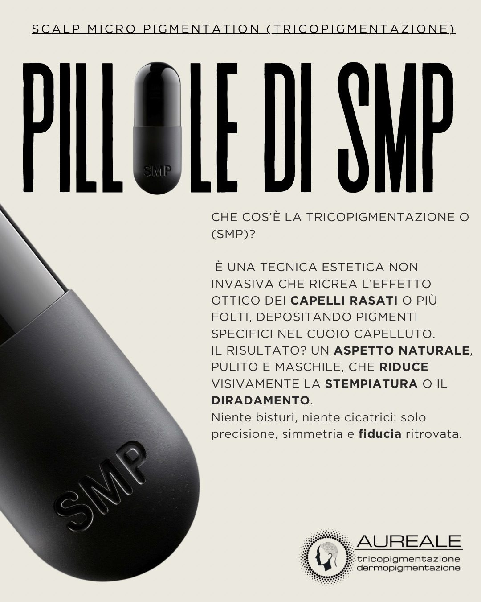

Approfondimenti
Articoli scientifico-divulgativi su alopecia, pigmento e trapianto. Hanno scopo informativo e non sostituiscono il parere medico.
È la forma più comune di perdita di capelli e coinvolge predisposizione genetica, risposta agli androgeni e progressiva miniaturizzazione follicolare: non è un semplice episodio di caduta improvvisa. La tricopigmentazione non tratta il meccanismo biologico e non stimola la crescita: interviene sul piano estetico, riducendo il contrasto visivo prodotto dal diradamento.
Fonte: Li H. et al., Risk factors for androgenetic alopecia: systematic review and meta-analysis, BMC Public Health, 2026.
Quando un pigmento viene introdotto nella cute, l'organismo attiva una risposta locale e cellule come i macrofagi partecipano alla gestione delle particelle: la permanenza visibile non significa immobilità biologica assoluta. Nella tricopigmentazione la percezione complessiva si basa su migliaia di microdepositi. Tatuaggio artistico, PMU e SMP non hanno lo stesso obiettivo estetico, e termini come bioriassorbibile non vanno intesi come garanzia di scomparsa completa entro un tempo prestabilito.
Fonti: Nguyen B. et al., Skin Appendage Disorders, 2022; Rassman W. et al., J Clin Aesthet Dermatol, 2015.
La letteratura descrive la SMP come deposito puntiforme di pigmento nel derma e riporta l'integrazione tra FUE e SMP come opzioni complementari per il camouflage estetico. Non risultano studi controllati sufficienti per promettere che l'attecchimento dei graft sia identico in cute già trattata con SMP: quando è previsto un trapianto, il coordinamento con il chirurgo fa parte di una pianificazione responsabile. Dopo il trapianto la SMP può essere valutata per aumentare la densità visiva percepita o mimetizzare esiti FUE/FUT, rispettando guarigione e percorso chirurgico.
Fonti: Nguyen B. et al., 2022; Rassman W., Pak J., Kim J., 2017; Rassman W. et al., 2015.

